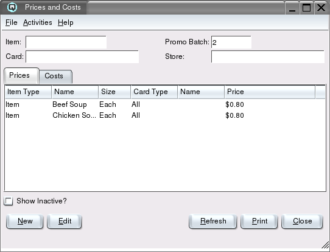
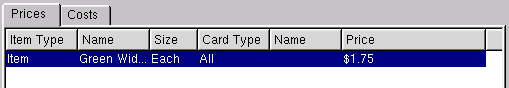
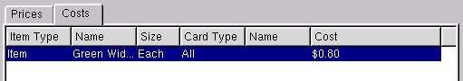

Prices and Costs

The prices and costs list window is used to view, create or edit the
advanced and
promotional prices and costs of products and/or services.
Item
Enter or select the item to view. Only prices/costs for the entered
item will be displayed in the price/cost table. If left blank prices/costs
for all items will be displayed.
Card
Enter or select the card to view. Only prices/costs for the entered
card will be displayed in the price/cost table. If left blank
prices/costs for all cards will be displayed.
Store
Enter or select the store to view. Only prices/costs for the entered
store will be displayed in the price/cost table. If left blank
prices/costs for all stores will be displayed.
Promo Batch
Enter or select the promotion batch to view. Only prices created by the
entered promotion batch will be displayed in the price table.
Prices Folder

The prices folder is used to display the advanced selling prices of items.
-
- Item Type - Defines if the price is linked to an item or
an item group.
- Name - The description of the item or name of the item group.
- Size - The size of the item.
- Card Type - Defines if the price is linked to a specific
customer, a customer group or all customers.
- Name - The specific name of the customer or customer group.
- Price - The selling price linked to the item.
- Inactive - The active state of the price.
Costs Folder

The costs folder is used to display the advanced purchasing costs of items.
-
- Item Type - Defines if the cost is linked to an item or
an item group.
- Name - The description of the item or name of the item group.
- Size - The size of the item.
- Card Type - Defines if the cost is linked to a specific
vendor, a vendor group or all vendors.
- Name - The specific name of the vendor or vendor group.
- Cost - The purchasing cost linked to the item.
- Inactive - The active state of the cost.
Show Inactive
Toggle on or off. Toggle on to display both active and non-active
prices/costs. Toggle off to display only active prices/costs.
New
Select this function to create a price/cost.
Edit
Select this function to edit the high-lighted price/cost.
Refresh
Clicking on refresh will refresh the data on the screen.
Print
Select this function to print the contents of the list to the
printer.